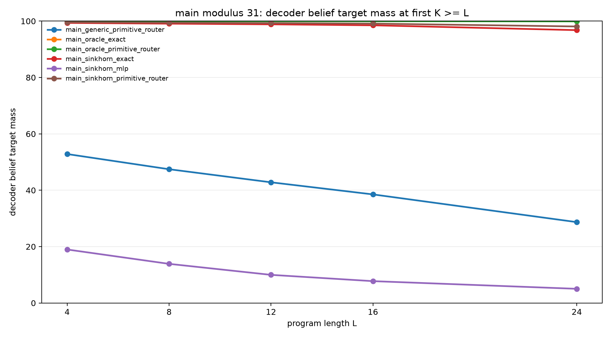
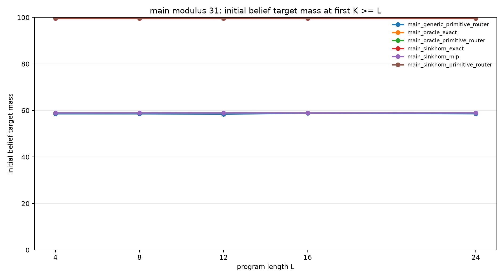
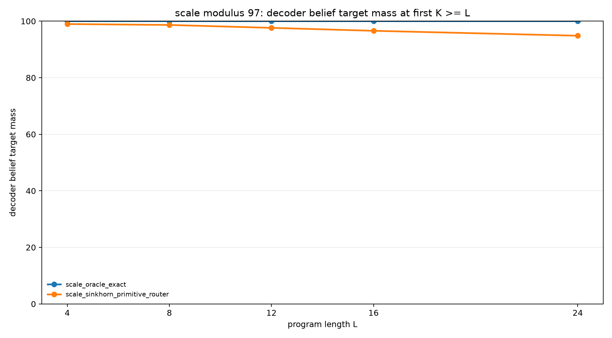

End-to-End Structured Slot Executor
Abstract
This experiment tests whether a single learned model can form a modular belief state and execute recurrent symbolic updates without being given either the initial state or the transition rule.
The task family uses hidden residues A and B with B = A + d (mod p). A program applies arithmetic updates and observations, and the model must recover the final support over (A, B).
Problem
Each example begins with a relation:
B = A + d (mod p)
The value of A is hidden, so the initial support contains one valid (A, B) pair for each residue. The program then applies operations such as modular increments, decrements, swaps, and observations. The target is the final belief support induced by the whole program.
The strict metric is the probability mass assigned to the exact final support after evaluating at the first recurrent step budget K that is at least the program length L.
Model
The executor represents belief states with weighted slots. Each slot carries a distribution over A, a distribution over B, and a slot weight. Decoding forms a dense belief over (A, B) from the slot mixture.
The primary learned executor has two structured components:
- A Sinkhorn-normalized cyclic initializer that maps the relation offset
dinto one slot per residue. - A primitive router that selects among equivariant modular update candidates for each program operation.
Results
Main Modulus 31
Training used program lengths 1-8. Evaluation used held-out lengths 4, 8, 12, 16, and 24.
| Variant | Init | Transition | L=24 query | L=24 belief | Initial belief | Route acc |
|---|---|---|---|---|---|---|
oracle_exact | oracle | exact | 100.0% | 100.0% | 100.0% | n/a |
oracle_primitive_router | oracle | primitive router | 99.9% | 99.9% | 100.0% | 100.0% |
sinkhorn_exact | sinkhorn cyclic | exact | 97.7% | 96.8% | 99.6% | n/a |
sinkhorn_primitive_router | sinkhorn cyclic | primitive router | 98.7% | 98.1% | 99.7% | 100.0% |
generic_primitive_router | generic MLP | primitive router | 43.0% | 28.7% | 58.6% | 100.0% |
sinkhorn_mlp | sinkhorn cyclic | MLP | 19.9% | 5.0% | 58.9% | n/a |


Scale Modulus 97
The modulus-97 scale check used the same held-out maximum length of 24 with a smaller evaluation batch.
| Variant | Init | Transition | L=24 query | L=24 belief | Initial belief | Route acc |
|---|---|---|---|---|---|---|
oracle_exact | oracle | exact | 100.0% | 100.0% | 100.0% | n/a |
sinkhorn_primitive_router | sinkhorn cyclic | primitive router | 96.2% | 94.9% | 99.4% | 100.0% |

Interpretation
The full learned structured executor solves the task end-to-end at modulus 31 and remains strong at modulus 97. The control rows isolate why: the learned router is exact when the state is supplied, and the Sinkhorn initializer forms nearly exact support when the transition is supplied. When both are trained together, the model retains both properties.
The failures are also informative. The generic initializer does not cover the initial modular support, so even a perfect router cannot recover the full belief state. The unstructured MLP transition fails despite a structured initializer, showing that transition equivariance is doing real work.
At modulus 97, the residual error is not caused by wrong route selection or missing residue coverage. It appears as slow diffusion of belief mass through long recurrent execution. That points to sharper recurrent state maintenance as the next technical bottleneck.
Limitations
The model uses strong structure: the slot capacity equals the modulus, the initializer is cyclic, and the transition router chooses among modular primitive candidates. The task is synthetic and arithmetic. The result shows that a learned structured executor can compose these mechanisms reliably, not that an unconstrained neural model would discover the same representation.
Artifact Layout
Lightweight code, metrics, figures, and reports live in:
experiments/end_to_end_structured_slot_executor/
Saved model weights live separately in:
large_artifacts/end_to_end_structured_slot_executor/checkpoints/
The checkpoint manifest is:
experiments/end_to_end_structured_slot_executor/checkpoint_manifest.csv